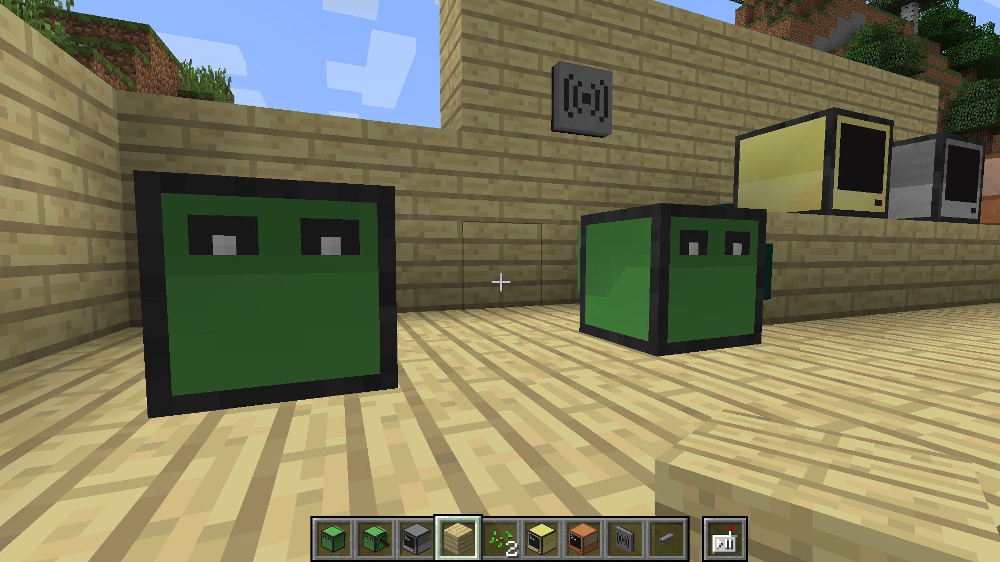

Building Knowledge
How Minecraft and other video games are used in today's classrooms
Growing Up with Technology
The current generation has grown up with computers.
Teaching is done using books, pencils and paper.
"Do the kids need to adapt to the current system, or does the system need to adapt to the kids?"
Teaching & Gaming?
"Why do we not use gaming as a method of teaching the current generation of students?"
Problem Statement
We wish to examine the extent to which gaming - and the game Minecraft in particular - can be used to enhance teaching in schools.
About Video Games
Video games are great fun.
Gaming industry is massive:
- 2004: $7.3 billion
- 2014: $22.41 billion
- >200% increase
What did video games ever do for us?
Gamers claim that videogames can teach a variety of skills:-
- Co-operation skills and strategy planning
- Foreign language skills
- Handling ethical dilemmas
Many gamers credit videogames with helping them achieve real-life successes.
Video Games Made for School & Work
Serious Games
| Siemens Wind Power simulator, to train employees |  |
| Global Conflict, in which players deal with geopolitical conflicts |  |

Very old example of a video game designed for teaching
First version released in 1971
Game designed to teach students about 19th century American pioneer life

Released in 2009 to students at the Florida Virtual School
Player is introduced to American history through the game
Games such as these create bridges
between the native digital student
and teachers not comfortable with computers
Bringing Teaching into Mainstream Gaming
SimCity 2000
In 2010, Zeynep Tanes & Zeynep Cemalcilar introduced the game to seventh grade students in Istanbul.
Students playing the game had an increased attention to economic circumstances.
"Perception of their neighbourhood and local authorities has changed."
The Sims II: Open For Business
Game was used to teach 13-14 year old students basic mathematical principles
No changes were observed in direct mathematical knowledge between control & playing group
However, gaming group was able to use knowledge on a higher (more abstract) level
Age of Empires II
Game was used in a seventh grade class on ancient history
Teacher met some cynicism along the way: other teachers, school personnel and parents were not sure of the educational benefits
Made a wiki with assignments that students had to complete during and after playing the game
Minecraft
What is Minecraft?
Sandbox game set within a procedurally generated 3D environment.
Consists mainly of blocks the player can interact with.
Created by Mojang in 2009. Starting out as the work of only one person, it is now the 3rd best selling game ever, with 70 million copies sold
In 2014, Microsoft bought Mojang for $2.5 billion
What is the appeal?
The player can collect blocks through mining, craft new blocks with materials collected in the game world, and build structures by placing blocks together
There is no specific storyline in Minecraft
The game is hugely open-ended with vast possibilities—this encourages creativity
Learning with Minecraft
Though the game provides a great deal of freedom, the rules can be changed through mods
This avenue is one of the reasons why Minecraft is a particularly appropriate topic to study gaming in teaching
It is possible, for example, to create a map which replicates the human body, giving students the chance to explore the human body and learn about anatomy
LearnToMod
LearnToMod is an online interactive site which teaches you to create a mod from start to finish
The website offers lessons in video form, and as puzzles and quizzes
As the user progresses in development, they "level-up", earning badges etc.
The site offers two ways to make a mod: one by interacting with in-game blocks; and another by coding with JavaScript
Computercraftedu
Easy to learn programming tool created as a mod for Minecraft
Visual, immediate feedback to help beginners increase understanding
The mod enables the user to program in-game
Academic Analysis
Academic Analysis
Minecraft is still a relatively new game, little academic research available
Zorn et al. (n.d.): using Minecraft as a tool to teach programming increases interest in the subject
Bayliss (2012): "increased student motivation for artificial intelligence through modding"
Young et al. (2012) found there were benefits in teaching mathematics, languages, history and physical education through gaming and suggested benefits for teaching science
Conclusion (1)
Research shows that many different games are used in teaching all kinds of subjects, mostly with positive results
Use of gaming in teaching produces results in different competencies and on different cognitive levels

Conclusion (2)
Little research on Minecraft in teaching, but results with other non-linear, open-ended games are promising
Distinct from other games used in education, Minecraft offers extensive modding support
Possible problem: questions about the educational value of gaming from teachers, parents and perhaps some students
What's Next?
New technology makes for new possibilities
What's Next?
The use of gaming in education is going to grow, but slowly
School - both fun and educational?
Process Analysis
Working together as a group
Working with the supervisor
Project planning
Our learning process
Image Credits
Dobra, A. (2013). Age of Empires 2: HD Edition Review (PC). [Screenshot from Age of Empires II]. Retrieved 28th September 2015 from http://www.softpedia.com/reviews/games/pc/Age-of-Empires-2-HD-Edition-Review-344425.shtml
Nagy, A. (2015). Minecraft is More than Just a Game and Here's why. [Screenshot from Minecraft]. Retrieved 30th September 2015 from http://www.minecrafterdepot.com/minecraft-is-more-then-just-a-game-and-heres-why/
AI designs Super Mario levels by watching videos (2015). [Screenshot from Mario]. Retrieved 28th September 2015 from http://beta.trtworld.com/business/ai-designs-super-mario-levels-watching-videos-3726
[Screenshot from Siemens Wind Power Simulator]. Retrieved 30th September 2015 from https://i.vimeocdn.com/video/467429784_1280x720.jpg
[Promotional image for Global Conflicts Palestine]. Retrieved 30th September 2015 from https://freepalestinecampaign.files.wordpress.com/2009/07/global-conflict-palestine_1.jpg
[Image from The Oregon Trail]. Retrieved 30th September 2015 from http://missedprints.com/wp-content/uploads/2015/01/the-oregon-trail-video-game.jpg
[Promotional image for Conspiracy Code]. Retrieved 30th September 2015 from https://queenscollegiate.files.wordpress.com/2010/07/conspiracy-code-everybody.jpg
More Elder Scrolls Online beta invites have been sent out (2014). [Screenshot from Elder Scrolls Online]. Retrieved 30th September 2015 from http://www.loadthegame.com/wp-content/uploads/2014/02/Elder-Scrolls-Online-Skyrim-bridge.jpg
{kind=link}
[Screenshot from Sim City 2000]. Retrieved 28th September 2015 from https://www.youtube.com/watch?v=0aE6j0OmDhs
[Screenshot from The Sims 2: Open for Business]. Retrieved 29th September 2015 from http://vignette4.wikia.nocookie.net/sims/images/0/08/TS2OFB_Gallery_10.jpg/revision/latest?cb=20130723051507
{kind=link}
[Illustration of Bloom's Taxonomy]. Retrieved 30th September 2015 from https://juliaec.files.wordpress.com/2011/04/blooms_taxonomy.jpg
HoloLens Microsoft Demo - E3 2015 Microsoft Press Conference (2015). [Video]. Retrieved 30th September 2015 from https://www.youtube.com/watch?v=FNoHNTaP_Gk
Scott Pilgrim vs. the World Movie Clip - Level One: X2 Bonus (2010). [Video]. Retrieved 30th September 2015 from https://www.youtube.com/watch?v=_7vyrudcgOQ